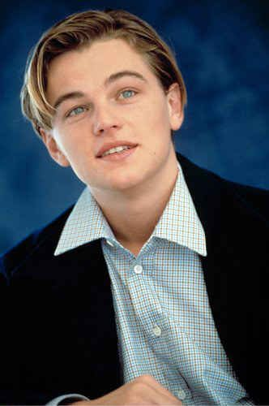
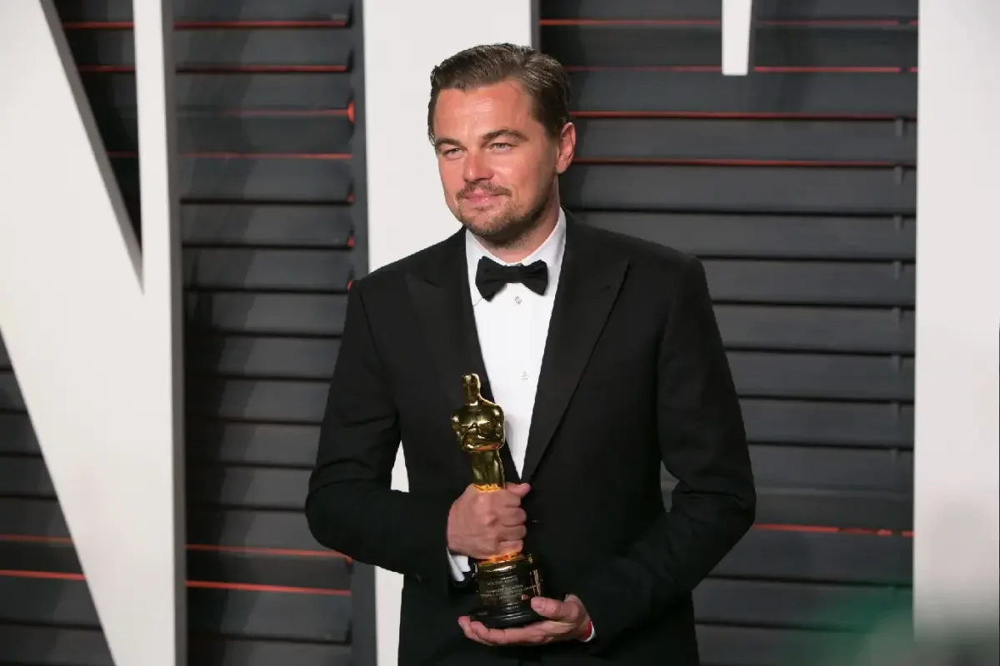
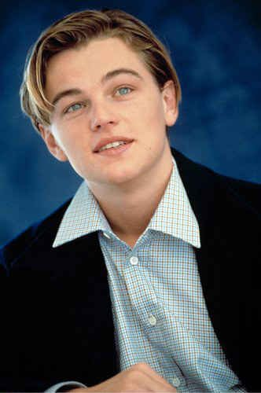
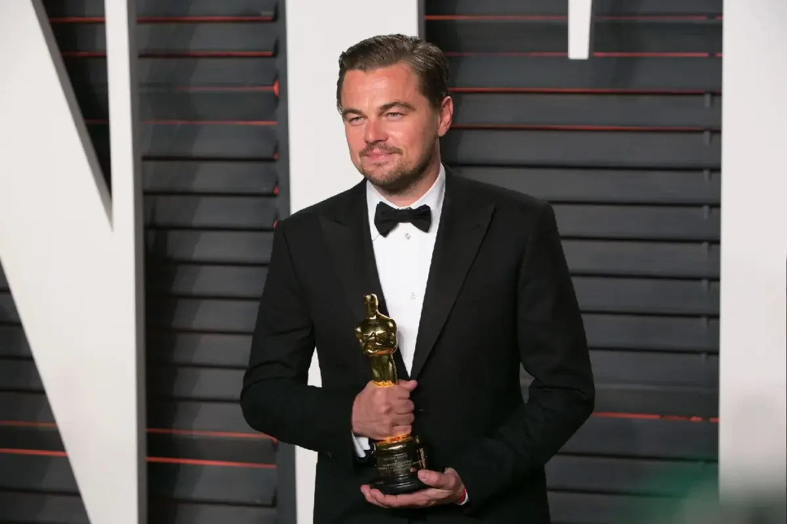

Leonardo Wilhelm DiCaprio, Nascido em Los Angeles, 11 de novembro de 1974. É um ator, produtor, empresário e filantropo.
DiCaprio começou a sua carreira aparecendo em anúncios de televisão no início da década de 1990, após o qual teve papéis recorrentes em várias séries de televisão. Ele começou sua carreira cinematográfica estreando como Josh em Critters 3 (1991). Porém, foi em 1997 que ganhou a fama internacional com Titanic. Ele também ganhou seu primeiro Oscar e Bafta por sua atuação em O Regresso. DiCaprio é o fundador de sua própria produtora, a Appian Way Productions.
Com os pai George DiCaprio e Irmelin indenbirken, DiCaprio é casado atualmente com Vittoria Ceretti, mas já teve relacionamentos com famosas como a modelo brasileira Gisele Bündchen, Também namorou a modelo israelense Bar Refaeli, com a atriz Blake Lively. Leonardo tem uma casa em Los Angeles e um apartamento em Manhattan, Nova Iorque. Em 2009, comprou uma ilha perto do Belize e planeja construir um resort amigo do ambiente lá.
Critters 3 (1991)
Romeo + Juliet (1996)
Titanic (1997)
Pegue me se for capaz (2002)
Ilha do medo (2010)
Django: Livre (2012)
O lobo de Wall Street (2013)
DiCaprio foi indicado a 3 Oscar de melhor ator, e 1 de melhor filme entre os anos de 1994-2020, vencendo 1 de melhor ator com o filme O regresso. E com um total e 6 indicações ao globo de ouro por melhor ator ele vence 3 com os filmes: The Aviator, O lobo de wall street e O regresso.
Alguma duvida? Entre em contato conosco:
Envie um email para nós